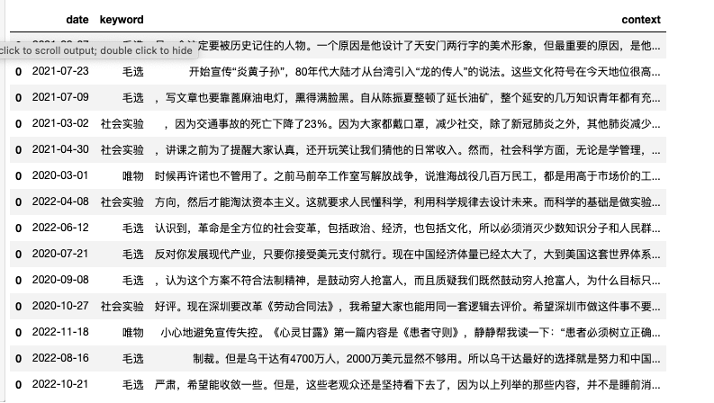
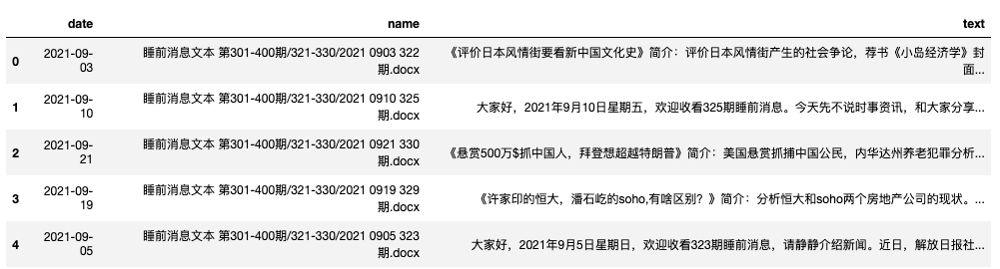
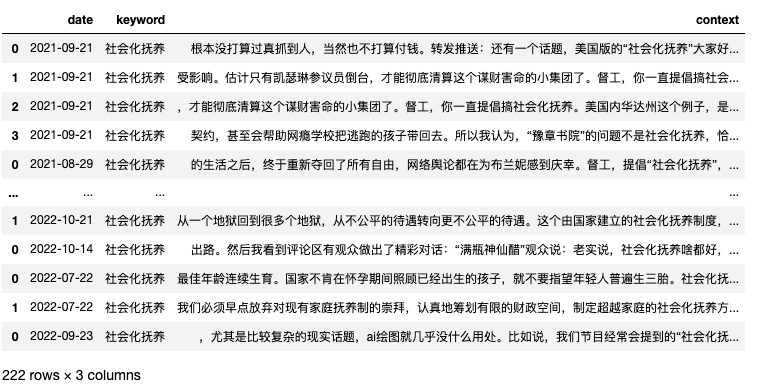
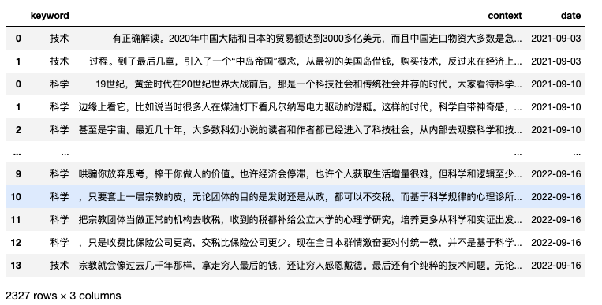

我的信仰是科学的唯物史观，虽然一直觉得爷爷是伟人，但是没有系统钻研小本本，所以似懂非懂，好在有睡前消息这个节目，可以时不时的聆听到半个世纪前的伟人智慧。


一、读取数据
睡前消息是我最喜欢看的节目， 基本上隔两天不看睡不踏实。本次分享，不涉及观点之争，纯属技术玩乐。
import pandas as pd
bed_df = pd.read_csv('bedtime_news.csv', converters={'date': str})
bed_df.date = pd.to_datetime(bed_df.date)
bed_df.head()

#数据集起始日期
print(str(bed_df['date'].min())[:10])
print(str(bed_df['date'].max())[:10])
Run
2019-07-12
2022-11-29
#数据集含有的节目数
len(bed_df)
Run
522
二、准备工作
2.1 自定义词典
- 科学、技术
- 社会化抚养
- 债务、独山县
- 中医、以岭药业
将感兴趣的词加入到jieba自定义词典中，防止被错分。
import jieba
diywords = ['科学', '技术', '社会化抚养', '债务', '独山县', '毛选', '唯物', '社会实验']
for word in diywords:
jieba.add_word(word)
2.2 word_in_context
在这里定义了一个word_in_context函数，可以查看某些关键词上下文环境。
import jieba
import re
from nltk.tokenize import word_tokenize
import pandas as pd
import warnings
def word_in_context(text, keywords, window=3, lang='chinese'):
if lang=='chinese':
words = jieba.lcut(text.lower())
else:
try:
words = word_tokenize(text.lower())
except:
warnings.warn("你应该安装nltk和对应的nltk_data, 请看B站https://www.bilibili.com/video/BV14A411i7DB")
words = text.lower().split(' ')
keywords = [w.lower() for w in keywords]
kw_idxss = [[i for i, x in enumerate(words) if x == keyword] for keyword in keywords]
rows = []
for keyword, kw_idxs in zip(keywords, kw_idxss):
for idx in kw_idxs:
half = int((window-1)/2)
start = max(0, idx - half)
end = min(len(words), idx + half + 1)
row = {'keyword': keyword,
'context': ''.join(words[start: end]) if lang=='chinese' else ' '.join(words[start: end])
}
rows.append(row)
df = pd.DataFrame(rows)
return df
#测试【打算】前后上下文5个单词
word_in_context(text='根本没打算过真抓到人，当然也不打算付钱。转发推送：还有一个话题',
keywords=['打算'],
window=5,
lang='chinese')
2.3 词云图
pip install pyecharts==2.0.1
def plot_wordcloud(df, title):
import pyecharts.options as opts
from pyecharts.charts import WordCloud
text = ''.join(df['context'])
text = ''.join(re.findall('[\u4e00-\u9fa5]+', text))
words = jieba.lcut(text)
words = [w for w in words if len(w)>=2]
wordfreqs = []
for word in set(words):
freq = words.count(word)
wordfreqs.append((word, freq))
wordfreqs = sorted(wordfreqs, key=lambda k:k[1], reverse=True)
wordfreqs = [(w, str(f)) for w,f in wordfreqs]
cloud = WordCloud()
cloud.add(series_name="", data_pair=wordfreqs, word_size_range=[20, 100])
cloud.set_global_opts(title_opts=opts.TitleOpts(title=title,
title_textstyle_opts=opts.TextStyleOpts(font_size=23)),
tooltip_opts=opts.TooltipOpts(is_show=True))
cloud.render('{}.html'.format(title))
return cloud.render_notebook()
三、话题分析
相比LDA机器学习算法的晦涩难懂，其实可以用word_in_context对指定关键词进行定位和分析，数据处理的过程清晰透明。
3.1 Topic-社会化抚养
dfs = []
for idx, row in bed_df.iterrows():
df = word_in_context(text=row['text'],
keywords=['社会化抚养'],
window=50)
df['date'] = row['date']
dfs.append(df)
topic_df = pd.concat(dfs, axis=0)
topic_df

#涉及该主题的节目数
len(topic_df['date'].unique())
Run
65
#占比
len(topic_df['date'].unique())/len(bed_df)
Run
0.12452107279693486
在咱们这个数据集中，睡前消息500多期节目中，有65期谈及社会化抚养的，比例12%。
plot_wordcloud(df=topic_df, title='社会化抚养')

3.2 Topic-科学技术
dfs2 = []
for idx, row in bed_df.iterrows():
df = word_in_context(text=row['text'],
keywords=['科学', '技术'],
window=50)
df['date'] = row['date']
dfs2.append(df)
topic_df2 = pd.concat(dfs2, axis=0)
topic_df2

#涉及该主题的节目数
len(topic_df2['date'].unique())
Run
411
#占比
len(topic_df2['date'].unique())/len(bed_df)
Run
0.7873563218390804
在咱们这个数据集中，睡前消息500多期节目中，有411期谈及社会化抚养的，比例79%。
plot_wordcloud(df=topic_df, title='科学技术')

3.3 科学社会
面对社会问题，睡前消息倡导科学社会实验， 也喜欢讲毛选语录， 两者所涉及的是唯物的观点，科学社会的观点。放在一起试试
dfs3 = []
for idx, row in bed_df.iterrows():
df = word_in_context(text=row['text'],
keywords=['毛选', '唯物', '社会实验'],
window=100)
df['date'] = row['date']
dfs3.append(df)
topic_df3 = pd.concat(dfs3, axis=0)
topic_df3
#涉及该主题的节目数
len(topic_df3['date'].unique())
Run
14
len(topic_df3['date'].unique())/len(bed_df)
Run
0.02681992337164751
plot_wordcloud(df=topic_df3, title='科学社会')